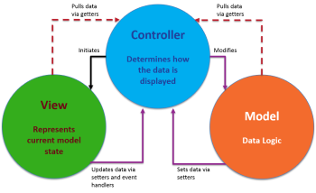

Developing a Data Platform
Analytics can deliver rich insights, but it is only when the models are used to empower a wider community that their true value is realised. It is estimated that only 10% of machine learning models make it into production, and hence their real value is never realised, primarily due to:
- Unreliable source data - To allow an application to scale a more robust process to ingest and store data is required.
- Accessibility issues – Solutions must be accessible and intuitive to prospective users.
The sections below outline how EMPEDATA develop applications that solve both these issues and adhere to our 5 guiding principles of application design. Alternatively get in touch to arrange a private discussion to discover how we can support your digital transformation.

- Affordability - Avoid expensive licence fees by using freely available open-source tools.
- Maintainability - Ensure code is well documented and written using popular, well-supported, programming languages.
- Scalability - Solutions should be designed with growth in mind, ensuring they can continue to satisfy your longer-term aspirations.
- Usability - User interfaces (UI) must be intuitive, engaging and provide the necessary data validation.
- Security - Data must be securely stored and robust access and permission management be provided.
Effective development

Equally as important as the applications construction are the processes used to build and deploy the service. In the last 10 years DevOps has established itself as software industry best practice, combining cultural philosophies, methodologies, and tools to develop and evolve applications faster and more reliably.
DevOps has connotations of large scale, cloud based applications servicing millions of customers and deploying updates every minute. While this is true of some organisations, such as Amazon, DevOps is principally about creating flow between the various process stages of an applications lifecycle, represented by the figure of eight shown. Through improving communication and feedback, identifying issues early and automating processes where possible to give the team the best possible chance of success.
We outline a few key concepts that should be understood, however for a more comprehensive account of DevOps practices we recommend The DevOps Handbook by Gene Kim.
Scrum
- Agile – When operating in a development environment, where there is a high degree of uncertainty, traditional project management techniques don’t work. Agile, as defined in more detail in the book Scrum The Art of Doing Twice The Work In Half the Time, is an approach to project management in which small 2-3 week sprints of activity are planned, each of which delivers a demonstrable package of capability.
- Project Backlog – A level list of everything that needs to be built or done to make the vision a reality in order of priority.
- Sprint planning – Refining the backlog to ensure all the necessary information is available to estimate the relative size of a task and deciding how much of this work can be accomplished in the fixed time window of the sprint.
- Daily Standup – A daily review of a Kanban board that tracks the sprint activities between "to do", "doing" and "done" in which the team members report on what they did yesterday, what they plan to do today and any obstacles they are facing.
- Sprint Demo – At the end of the sprint the team show what they have accomplished to any interested stakeholders.
- Retrospectives – A meeting in which the team examines how the sprint went and what could have potentially gone better with the goal of identifying opportunities to improve.
Process automation
- Version control systems - Systems such as Git provide a means of storing, sharing and tracking changes to source code in a special kind of database. This repository is an invaluable source of information that needs to be protected from both catastrophic events and the casual degradation by human error.
- Code Formatting While software doesn’t care how the code looks, other developers who may have to work on it in the future certainly do. When everyone is writing code that looks the same, it becomes easier to understand and amend. Opinionated formatting tools can be used to enforce styling rules and simplifies the process of writing well-structured code.
- Testing - is fundamental to ensure good quality code is being written and allows changes to be quickly validated. The main types of testing are:
- Unit Testing - refers to taking a component of a program and testing it in isolation, these tests can then be automated to validate changes, test dependencies and handling of edge cases.
- Functional Testing - checks the compliance of the overall system against a defined set of criteria. In other words, does the software do what it’s supposed to do?
- Regression Testing - running previously written tests whenever a new change is introduced to confirm it continues to function as expected.
- Continuous integration – is a software development practice where developers regularly merge their code changes into a central repository, after which automated tests validate the code quality. A robust approach to integration ensures bugs are found quicker and reduces the time it takes to release software updates. Our prefered tool is GitHub Action
Depoying your application
- Statically hosting - enables web pages to serve up the same HTML, CSS and JavaScript to all users who enter the site. As no processing is required on the server these pages are generally faster and can be hosted at minimal or no cost, such as GitHub Pages.
- Dynamic hosting - enables the processing of content and storage of data on the server. Dynamic hosting can be provided on any corporate network or by a cloud service provider such as Microsoft Azure or Amazon AWS. If you already have an IT team capable of setting up, configuring and managing servers these options provide the greatest flexibility.
- Platform as a Service (PaaS) - offer a more managed, low configuration service, making it incredibly easy to get up and running and provides total upfront transparency of costs. Our favoured solution is to use Heroku, which comes with the added benefit of providing a “Free Tier” which, while there are significant constraints in terms of speed and storage capacity, provides an ideal sandpit environment in which to demonstrate capability without commitment.
MLOPS
Extends the concept of DevOps to machine learning models where integration not only covers testing and validating code, but is now extended to test and validate the data in the system, including the retraining and serving of models as required.
Designing an application

Web Apps can provide functionality and secure data access to a variety of users through their web browsers without the need to install specialist software, allowing updates to be easily deployed and centralising the data storage.
For simple analytical applications the Streamlit library enables web apps to be created entirely using Python without the need for separate front end web development. This is a simple, low-cost solution for sharing analytical models amongst an internal team however it is unable to deliver the functionality required by more demanding applications.
For the majority of our data platform applications we use a Model View Controller (MVC) architecture which provides an appropriate balance between complexity and control by introducing some separation of concerns between the three core elements:
- Model - The backend that contains all the data logic.
- View – The frontend or graphical user interface (GUI).
- Controller – The brains of the application that controls how data is displayed.
Our preferred web development framework for server-side applications is Django. Django is a Python library, simplifying the integration with existing analytical/machine learning models, as discussed on the Analyse page, and provides built-in functionality such as admin panels, file upload support, authentication, contact forms and app management which all significantly reduces the time and effort required to build robust web applications.
In some circumstances if can be beneficial to further separate the UI and data processing elements of the application using an Application Programming Interface (API). APIs allow a programme to be broken into distinct services, enabling them to be developed in parallel with minimal risk of unintended consequences, so long as the interfaces between services are maintained. To support this approach Django provides a versatile toolkit for constructing web APIs.
The frontend (client-side) functionality of web application is provided using JavaScript for which a variety of frameworks exist. These frameworks enable developers to take advantage of pre-existing functionality and templates, reducing development time and increasing software quality. React is currently the most used front-end web application framework with a focus on developing common reusable UI components to deliver engaging and intuitive user interfaces and ensure consistency across all applications.
Structuring your data
The objective of a good data architecture is to ensure that all the information required to run your business satisfies the 3A's:
- Actionable - It must be able to demonstrate cause and effect, enabling people to learn from actions.
- Accessible - It is essential that the information gathered is available to everyone who needs to know the information contained and that it easily integrates into other applications.
- Auditable - Data often tells a story that is uncomfortable or challenging for people within the business. It is therefore essential that absolute confidence can be placed in the reliability of the source.
Having created a Data Lake, it will probably become apparent that different, contradictory, versions of the same data exist and require significant work to convert it into a format suitable for analysis. To manage this situation it is necessary to create a process for extracting the data from multiple sources, transforming it into a cleaned format and loading it into a structured database, called a Data Warehouse. This process of transforming and storing the data in a format optimised for a specific business purpose is commonly referred to as an ETL process.
The problem arises as new unstructured data needs to be ingested into the Data Warehouse. The solution is to build an application, as defined above, to collect and validate the data at the point of entry. This data is then stored in a dedicated database, known as a Data Mart, which in turn forms a component of the wider Data Warehouse capability. Depending on the data requirements of the application the Data Mart may be considered as either:
- Independent - Created by drawing from operational or external data sources which would otherwise reside with individuals and be inaccessible to the wider organisation.
- Hybrid - combines input from a Data Warehouse, operational systems and external systems
- Dependent - built by drawing data from the existing central warehouse generally used for enhanced security and performance.
Ultimately, the data being collected needs to be stored in a database; for which there are a variety of choices available, each with their own strengths and limitations.
- Relational databases are the standard solution, providing a strict structure/schema, ensuring the data they contain satisfies a predefined list of components, making it easily accessible and significantly reducing the chance of errors.
- Non-relational databases are more forgiving in their structure. Instead of tables with columns and rows, they have collections made from different categories allowing records of varying shape to be stored.
- Graph databases are a relatively new form of database that capture both the entities and relationships between the different data points. These databases rose to prominence with the growth of network analytics, as used extensively by Facebook and Google.
A combination of PostgreSQL and Neo4j satisfy the requirements of all web application data platforms. They both satisfy all of the 5 tool selection criteria outlined at the top of this page and can be easily integrated with Django.
- Neo4j is the world’s leading graph database graph database and is capable of providing fast high integrity graph storage. It comes with a dedicated query language that provides fast read and write performance and wealth of training materials to help you get started.
- PostgreSQL is a hybrid database, while traditionally considered as a relational database, Postgres has recently included the ability to store JSON and XML data formats, which provides the required NOSQL capabilities. Additional strengths of PostgreSQL include integrity controls that can prevent invalid or orphan records and high performance through advanced indexing and full-text search methods.
Security
We are currently writing this section! Please come back soon to check it out
The EMPEDATA difference

We know, as an SME, you need solutions that are reliable and affordable! That's why EMPEDATA focus on simplicity and clarity using powerful open-source tools to deliver robust solutions. The application code is yours meaning you are free to make any changes as your business needs develop, while the comprehensive documentation and the built-in unit tests we provide ensure any changes can be quickly assessed and validated. Where possible our solutions are built using Python because:
- Popularity - Python has overtaken French as the most popular language taught in primary schools, meaning access to people with knowledge of Python is relatively easy
- Readable and Maintainable Code - Python places great emphasis on code readability enabling you to maintain and update the software with the minimum of time and effort.
- Robust Standard Library - A wide range of thoroughly tested modules pre-exist that can be used directly to provide the functionality you require in your application.
- Active user community - Ensures there is plenty of support available on forums such as Stack Overflow for any issues you may encounter
If you think we can support you on your digital transformation, please fill in the form on our contact page to take the first steps on your digital transformation journey!
Learning resources
Free resources
- Introduction to HTML- Learn fundamental HTML skills and build your first webpage
- W3 schools - Detailed explanations of the key web development tools (HTML, CSS and JavaScript).
- React - An introduction to the React framework to build component based single page applications
- Django - A guide to backend development using Django, a popular python framework
- Full Stack Python - Resources to help develop your Python skills to develop web applications
Backend development
- Python for Everyone- An introduction to the Python programming language
- IT Automation with Python - Covers a lot of concepts like version control and testing
- Django for Everyone - Backend web development using the Django framework
- PostgreSQL for Everyone - A complete guide from basic to advanced SQL skills
- Getting Started with Neo4j - An introduction to graph databases and the Neo4j scripting language
Frontend development
- Basic HTML, CSS and JavaScript - Intro to Frontend Web Development
- React - An introduction to the React framework to build component based single page applications
Advanced frontend development
- React - A good Introduction.
- Redux - to manage global state in the application.
- React Router Dom - for routing.
- Formik - to manage form state
- Yup - For handling from validation.
- Apollo - For the GraphQL management
- Axios - Managing RESTful services
- Material UI - Used the basis for UI components
Recomended books
- The DevOps Handbook by Gene Kim
- Pro Git by Scott Chacon and Ben Straub
- The Data Warehouse Toolkit by Ralph Kimball
- Graph Algorithms: Practical Examples in Apache Spark and Neo4j by Mark Needham & Amy Hodler
- HTML & CSS by Jon Duckett
- JavaScript & jQuery by Jon Duckett
- Django by William Vincent
- The Road to React by Robin Wieruch
Project Portfolio